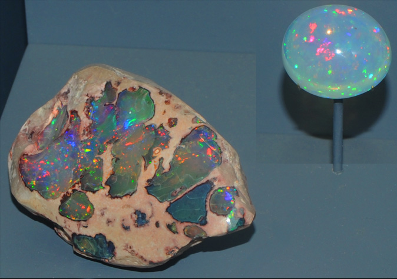
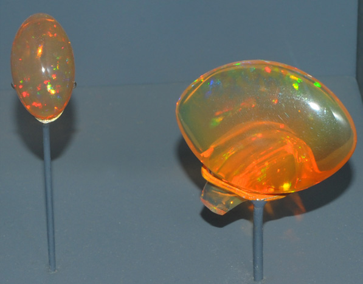
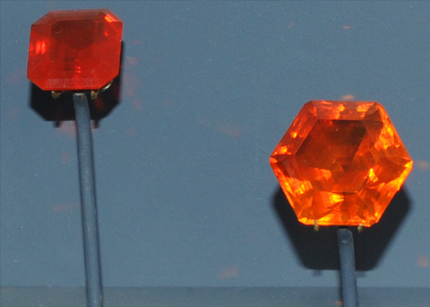
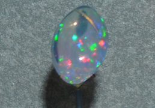
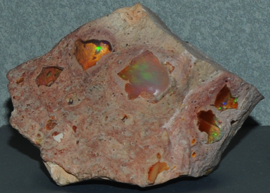
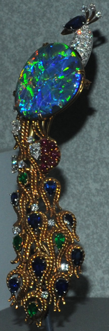
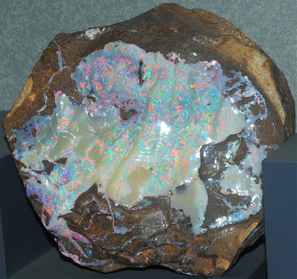

Opal
|

| SiO2.nH2O
These samples of opal are displayed in the Smithsonian Museum of Natural History. Opal is a not strictly a mineral, being a combination of minerals such as cristobalite and tridymite plus amorphous silica. It is represented by the general composition SiO2.nH2O. The sample at left is about 6 cm across and the opal gem is 55.9 carats. They are from Queretaro, Mexico.
|
|
These opal samples are also from Queretaro, Mexico. The gem is 21.6 carats and the oval sample is 2-3 cm across.
| 
|
|

| These opal gems are examples of the variety called "fire opal". The gems are 10.6 and 29.9 carats and are from Mexico. From the Smithsonian caption "Most fire opal is found in Mexico, typically in volcanic rock. Microscopic inclusions of iron oxide and the diffraction of light ignites the fire opal's flaming yellows and reds."
|
|
These are two more opal samples are also from Queretaro, Mexico. The gem is 14.5 carats and the mineral sample is about 7 cm across.

| 
|
|

| This ornamental piece is described as opal with diamond and corundum. This opal gem is 32 carats and is from Lightning Ridge, New South Wales, Australia. It is about 15 cm tall.

This opal sample is about 15 cm across and is from Barcoo River, Queensland, Australia. Opal is the national gem of Australia, and there are numerous mining locations.
|
Mindat's comments about opal: "Although it is still (2007) regarded as a valid mineral species for historical reasons, Opal is not a true mineral in the accepted sense of the word as it is composed of Cristobalite and/or Tridymite and amorphous silica (closely packed spheres form a diffraction grating to create Precious Opal)."
Opal is broken down into four types:
- Opal-CT Cristobalite-Tridymite
- Opal-C Cristobalite
- Opal-AG Amorphous - (Gem)
- Opal-AN
Mindat: Opal
|
Index |